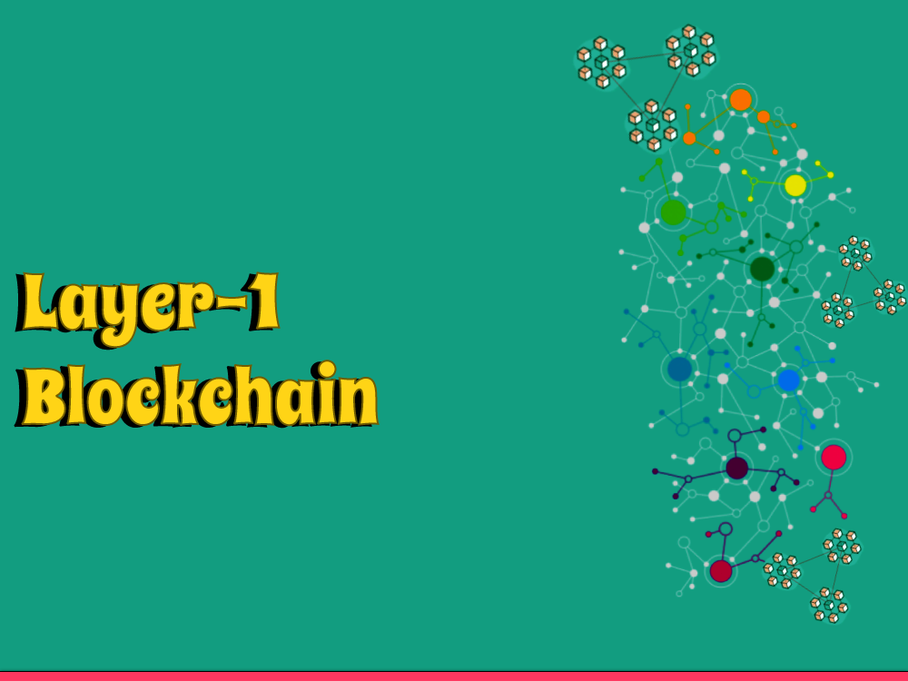

We'll investigate the captivating idea of Layer 1 blockchain innovation. As blockchain keeps on reforming businesses and reshape the advanced scene, understanding the basics of Layer 1 blockchains is fundamental. Thus, we should make a plunge and unwind the secrets behind Layer 1 blockchain!
Understanding Blockchain
Before we dive into Layer 1 blockchain, we should lay out an essential comprehension of blockchain innovation itself. Blockchain is a decentralized and dispersed record that safely records exchanges across various PCs or hubs. It gives straightforwardness, permanence, and kills the requirement for delegates.
Generally, blockchain has been related with digital forms of money like Bitcoin. Nonetheless, the capability of blockchain stretches out a long ways past computerized monetary forms. It can alter supply chains, casting a ballot frameworks, character the board, and substantially more. To bridle this potential, different blockchain structures and layers have been created, with Layer 1 being the establishment.
Introduction to Layer 1 Blockchain?
Layer 1 blockchain alludes to the fundamental framework or convention layer of a blockchain network. It fills in as the establishment whereupon every ensuing layer and applications are fabricated. Layer 1 blockchains center around the center parts of agreement, security, and decentralization.
At the Layer 1 level, the blockchain convention lays out the standards for exchange approval, block creation, and agreement systems. It characterizes the local digital money, network administration, and the general construction of the blockchain network. Layer 1 blockchains frequently have their novel qualities, elements, and incentives.
Key Features of Layer 1 Blockchain
Layer 1 blockchains offer a few key highlights that put them aside from different layers and customary unified frameworks. A portion of these highlights include:
Decentralization
Layer 1 blockchains are intended to work in a decentralized way, where no focal authority has unlimited authority over the organization. This decentralization guarantees more noteworthy security, unchanging nature, and trustlessness.
Agreement Components
Layer 1 blockchains carry out different agreement systems to approve exchanges and accomplish understanding among network members. Models incorporate Confirmation of Work (PoW), Evidence of Stake (PoS), and Appointed Verification of Stake (DPoS), each with its own benefits and compromises.
Adaptability and Throughput
Layer 1 blockchains face difficulties connected with versatility and throughput, as they process and approve exchanges at the convention level. Defeating these difficulties is essential to help an enormous number of exchanges and accomplish mass reception.
Local Digital money
Layer 1 blockchains commonly have their local digital currencies, which act as the mode of trade inside the organization. These digital forms of money frequently have exceptional utilities, for example, working with exchange charges, network administration, or getting to explicit highlights.
Examples of Layer 1 Blockchains
A few unmistakable Layer 1 blockchains have arisen in the blockchain environment. We should investigate a couple of models
Bitcoin (BTC)
The first and most notable Layer 1 blockchain, Bitcoin altered computerized cash and presented the idea of decentralized cash.
Ethereum (ETH)
Ethereum carried brilliant agreements to the very front, empowering designers to fabricate decentralized applications (dApps) and execute programmable exchanges on the blockchain.
Cardano (ADA)
Cardano plans to give a safe and versatile stage for the improvement of decentralized applications and the execution of intricate savvy contracts.
Polkadot (Speck)
Polkadot presents a multi-chain environment that empowers interoperability between various blockchains, permitting them to consistently impart and share data.
Conclusion
All in all, Layer 1 blockchain fills in as the establishment for blockchain networks, giving the center foundation to decentralized exchanges, agreement, and security.
Understanding Layer 1 blockchain is critical for getting a handle on the potential and conceivable outcomes of blockchain innovation. We trust this blog entry has revealed insight into the idea of Layer 1 blockchain and enlivened you to investigate further into this entrancing field.
Thank you for reading, and stay tuned for more exciting insights into the world of blockchain and cryptocurrencies!